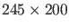
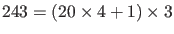
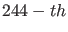
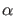
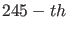
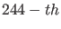
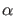
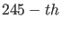

Next: The phase response curve Up: Continuation of limit cycles Previous: Limitcycle initialization Contents
For this example the following system from adaptive control was used
in a feedback control system, as described in
[20], [21] and further used in [25] (Example 5.4, p. 178):
From this Hopf point an initial cycle is calculated using the starter init_H_LC. The results of the continuation are plotted using the plot function plotcycle(x,v,s,e) (see Figure 12). This function plots the cycles x. e is an array whith either 2 or 3 elements for 2-dimensional and 3-dimensional plotting respectively. Its entries must be indices of state variables or active parameters in x. The index of the active parameter is size(x,1)
>> init; >> [x0,v0]=init_EP_EP(@adaptx,[0;0;0],[-10;1],[1]); >> opt = contset; opt = contset(opt,'Singularities',1); >> [x,v,s,h,f]=cont(@equilibrium,x0,[],opt); first point found tangent vector to first point found label = H , x = ( 0.000000 0.000000 0.000000 1.000002 ) First Lyapunov coefficient = -3.000001e-001 elapsed time = 0.3 secs npoints curve = 300 >> x1=x(1:3,s(2).index);p=[x(end,s(2).index);1]; >> [x0,v0]=init_H_LC(@adaptx,x1,p,[1],1e-6,20,4); >> opt = contset(opt,'MaxNumPoints',200); >> opt = contset(opt,'Multipliers',1); >> opt = contset(opt,'Adapt',1); >> [xlc,vlc,slc,hlc,flc]=cont(@limitcycle,x0,v0,opt); first point found tangent vector to first point found Limit point cycle (period = 6.283185e+000, parameter = 1.000000e+000) Normal form coefficient = -1.306379e+000 Branch Point cycle(period = 6.283185e+000, parameter = 9.999996e-001) Period Doubling (period = 6.364071e+000, parameter = 6.303020e-001) Normal form coefficient = -4.267675e-002 Neimark-Sacker (period = 6.433818e+000, parameter = 1.895460e-008) Neutral saddle Period Doubling (period = 6.364071e+000, parameter = -6.303020e-001) Normal form coefficient = 4.268472e-002 elapsed time = 27.6 secs npoints curve = 200 >> plotcycle(xlc,vlc,slc,[size(xlc,1) 1 2]);
We note that xlc is a
 matrix; each column corresponds to a computed limit cycle and gives the coordinates
of all points of the fine mesh, i.e.
 values, plus the period  as the  component and the
value of the active parameter  as the  component.
as the  component and the
value of the active parameter  as the  component.
The x-axis contains the active parameter, the y-axis the first state variable  and the z-axis the second state variable
and the z-axis the second state variable  .
This run can be tested by the statement testadapt1 (the axis labels have to be set manually). If you run only this example,
do not forget to execute init init statement first.
.
This run can be tested by the statement testadapt1 (the axis labels have to be set manually). If you run only this example,
do not forget to execute init init statement first.
We note that the Limit point cycle and Branch point cycle detected in this run are degenerate: they reduce to the Hopf point itself. The Neimark-Sacker bifurcation is, in reality, a Neutral Saddle, i.e. it is an unstable periodic orbit with two real multipliers whose product is 1.
From the first Period Doubling bifurcation detected a limit cycle continuation of the nearby double period cycle is started. First, an initial cycle and its tangent vector are calculated using the starter init_PD_LC. The continuation is done using the standard continuer and the result is plotted using the plotcycle function (see figure 13).
>> [x1,v1]=init_PD_LC(@adaptx,xlc,slc(4),40,4,1e-6); >> opt=contset(opt,'MaxNumPoints',250); >> [xlc2,vlc2,slc2,hlc2,flc2]=cont(@limitcycle,x1,v1,opt); first point found tangent vector to first point found Branch Point cycle(period = 1.272814e+001, parameter = 6.303020e-001) Period Doubling (period = 1.273437e+001, parameter = 5.796299e-001) Normal form coefficient = -5.579636e-002 Neimark-Sacker (period = 1.154609e+001, parameter = 2.806142e-010) Neutral saddle Period Doubling (period = 1.106284e+001, parameter = -4.471966e-002) Normal form coefficient = 6.970442e-003 Limit point cycle (period = 1.103168e+001, parameter = -4.494912e-002) Normal form coefficient = 1.311327e+002 Neimark-Sacker (period = 1.076785e+001, parameter = -1.076152e-009) Neutral saddle Limit point cycle (period = 1.103169e+001, parameter = 4.494912e-002) Normal form coefficient = -1.310582e+002 Period Doubling (period = 1.106284e+001, parameter = 4.471966e-002) Normal form coefficient = -6.973392e-003 Neimark-Sacker (period = 1.154609e+001, parameter = 5.372279e-010) Neutral saddle Period Doubling (period = 1.273437e+001, parameter = -5.796298e-001) Normal form coefficient = 5.580465e-002 elapsed time = 62.3 secs npoints curve = 250 >> plotcycle(xlc2,vlc2,slc2,[size(xlc2,1) 1 2]);This run can be tested by the statement testadapt2.
![\includegraphics[scale=0.8]{ex/LCcurve.eps}](img332.png)